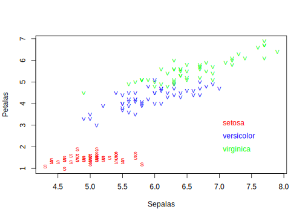
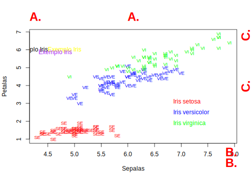

5.5 Funções gráficas de baixo nível
Funções de baixo nível são funções que permitem ADICIONAR elementos em um gráfico já aberto com as funções plot() ou plot.new().
Muitas vezes você pode usar uma função de alto nível para fazer a mesma coisa com o argumento add = TRUE.
Vamos ver alguns exemplos mais comumente utilizados de funções de baixo-nível.
5.5.1 legend()
A função legend() permite colocar uma legenda sobre um gráfico aberto por uma função de alto nível.
Sepalas <- iris$Sepal.Length
Petalas <- iris$Petal.Length
nlevels(iris$Species) # contém três espécies## [1] 3## [1] "setosa" "versicolor" "virginica"ascores <- c("red", "blue", "green")[as.numeric(iris$Species)]
# plota a figura
plot(Sepalas, Petalas, pch = 21, bg = ascores, cex = 0.8)
# vamos colocar uma legenda no canto direito inferior
# definimos o que vai na legenda
cores <- c("red", "blue", "green")
texto <- levels(iris$Species)
legend("bottomright", legend = texto, pt.bg = cores, pch = 21)
# ficou apertado né...
# aumentar o espacamento, colocar mais para dentro e tirar o box, diminuir o texto, aumentar o tamanho do ponto
# plota a figura
plot(Sepalas, Petalas, pch = 21, bg = ascores, cex = 0.8)
legend("bottomright", legend = texto, pt.bg = cores, pch = 21, y.intersp = 1.7, inset = 0.1, box.lwd = 0, cex = 0.8, pt.cex = 1.5)# podemos colocar legendas também pela coordenada
plot(Sepalas, Petalas, pch = 21, bg = ascores, cex = 0.8)
legend(x = 7, y = 3, legend = texto, pt.bg = cores, pch = 21, y.intersp = 1.7, inset = 0.1, box.lwd = 0, cex = 0.8, pt.cex = 1.5)# ou colocar fora da figura
# neste caso, primeiro dividimos o dispositivo em tres partes e plotamos a figura em 2 partes e a legenda em 1 parte
layout(matrix(c(1, 1, 2), nrow = 1, ncol = 3))
plot(Sepalas, Petalas, pch = 21, bg = ascores, cex = 0.8)
# usamos a função plot.new() para mudar de parte no dispositivo cirando um plot vazio
plot.new() # nao vai ver nada acontecendo
# agora plotamos a legenda nesse espaço
legend("left", legend = texto, pt.bg = cores, pch = 21, y.intersp = 1.7, inset = 0.1, box.lwd = 0, cex = 0.8, pt.cex = 1.5)5.5.2 points()
Esta função genérica serve para adicionar pontos, linhas, simbolos etc, segundo coordenadas x ou x+y em um gráfico aberto por uma função de alto nível.
layout(1) # restaurando para 1 se fez o script acima
# vamos usar um conjunto de dados de crescimento de laranja
data("Orange")
colnames(Orange) # número da árvore, idade, circunferencia nessa idade## [1] "Tree" "age" "circumference"| Tree | age | circumference |
|---|---|---|
| 1 | 118 | 30 |
| 1 | 484 | 58 |
| 1 | 664 | 87 |
| 1 | 1004 | 115 |
| 1 | 1231 | 120 |
| 1 | 1372 | 142 |
## [1] 1 2 3 4 5
## Levels: 3 < 1 < 5 < 2 < 4# vamos plotar idade por circunferencia
# uma linha por árvore
# cada linha de um tipo e cor diferente
# definir tipos de linhas e cores
ascores <- c("red", "blue", "green", "yellow", "purple")
linhatipos <- c("solid", "dashed", "dotted", "dotdash", "longdash")
# uma cor por árvore
treeidx <- as.numeric(Orange$Tree)
cls <- ascores[treeidx]
cls## [1] "blue" "blue" "blue" "blue" "blue" "blue" "blue" "yellow"
## [9] "yellow" "yellow" "yellow" "yellow" "yellow" "yellow" "red" "red"
## [17] "red" "red" "red" "red" "red" "purple" "purple" "purple"
## [25] "purple" "purple" "purple" "purple" "green" "green" "green" "green"
## [33] "green" "green" "green"## [1] "dashed" "dashed" "dashed" "dashed" "dashed" "dashed"
## [7] "dashed" "dotdash" "dotdash" "dotdash" "dotdash" "dotdash"
## [13] "dotdash" "dotdash" "solid" "solid" "solid" "solid"
## [19] "solid" "solid" "solid" "longdash" "longdash" "longdash"
## [25] "longdash" "longdash" "longdash" "longdash" "dotted" "dotted"
## [31] "dotted" "dotted" "dotted" "dotted" "dotted"# fazemos uma figura
plot(Orange$age, Orange$circumference, lwd = 1, type = "b", col = cls, lty = tps)## [1] "blue"## [1] "dashed"# nao dá para fazer assim, porque não especificamos como os pontos se ligam
# podemos no entanto colocar linha por linha
# desenhamos o gráfico com uma função de alto nível com os dados, mas vazia
plot(Orange$age, Orange$circumference, type = "n", xlab = "Idade", ylab = "Circunferência")
# adicionamo para cada árvore os pontos e as linhas
arvs <- as.numeric(levels(Orange$Tree))
pts <- arvs + 20 # simbolos para pontos
i <- 1
for (i in 1:length(arvs)) { # para cada arvore
# filtra os dados
dd <- Orange[Orange$Tree == arvs[i], ]
# adiciona no gráfico aberto a linha e os pontos e uma vez (type='b', veja o argumento type)
points(dd$age, dd$circumference, type = "b", pch = pts[arvs[i]], lty = linhatipos[arvs[i]], lwd = 1, col = ascores[arvs[i]], bg = ascores[arvs[i]])
}
# vamos adicionar uma legenda
txt <- paste("tree", arvs)
legend("bottomright", inset = 0.1, box.lwd = 0, legend = txt, pch = pts[arvs], pt.bg = ascores[arvs], lty = linhatipos[arvs], col = ascores[arvs], y.intersp = 1.5)5.5.3 text() e mtext()
text() e mtext()- funções para plotar textos (>= 1 caracter de comprimento) sobre uma figura de alto nível. text() plota dentro da área da figura através de coordendas, mtext() plota fora da área da figura com indicação do lado (side) e da distância da linha dos eixos (line).
Sepalas <- iris$Sepal.Length
Petalas <- iris$Petal.Length
nlevels(iris$Species) # contém três espécies## [1] 3## [1] "setosa" "versicolor" "virginica"ascores <- c("red", "blue", "green")[as.numeric(iris$Species)]
# vamos dar um código de texto para cada especie (suas primeiras letras maiusculo)
levels(iris$Species)## [1] "setosa" "versicolor" "virginica"## [1] "SE" "SE" "SE" "SE" "SE" "SE" "SE" "SE" "SE" "SE" "SE" "SE" "SE" "SE" "SE"
## [16] "SE" "SE" "SE" "SE" "SE" "SE" "SE" "SE" "SE" "SE" "SE" "SE" "SE" "SE" "SE"
## [31] "SE" "SE" "SE" "SE" "SE" "SE" "SE" "SE" "SE" "SE" "SE" "SE" "SE" "SE" "SE"
## [46] "SE" "SE" "SE" "SE" "SE" "VE" "VE" "VE" "VE" "VE" "VE" "VE" "VE" "VE" "VE"
## [61] "VE" "VE" "VE" "VE" "VE" "VE" "VE" "VE" "VE" "VE" "VE" "VE" "VE" "VE" "VE"
## [76] "VE" "VE" "VE" "VE" "VE" "VE" "VE" "VE" "VE" "VE" "VE" "VE" "VE" "VE" "VE"
## [91] "VE" "VE" "VE" "VE" "VE" "VE" "VE" "VE" "VE" "VE" "VI" "VI" "VI" "VI" "VI"
## [106] "VI" "VI" "VI" "VI" "VI" "VI" "VI" "VI" "VI" "VI" "VI" "VI" "VI" "VI" "VI"
## [121] "VI" "VI" "VI" "VI" "VI" "VI" "VI" "VI" "VI" "VI" "VI" "VI" "VI" "VI" "VI"
## [136] "VI" "VI" "VI" "VI" "VI" "VI" "VI" "VI" "VI" "VI" "VI" "VI" "VI" "VI" "VI"# plota a figura, mas ao inves de simbolos adicionamos text
# poderiamos fazer isso se spp fosse apenas 1 caractere
plot(Sepalas, Petalas, pch = spp, col = ascores, cex = 0.8)
legend("bottomright", legend = levels(iris$Species), text.col = c("red", "blue", "green"), inset = 0.1, box.lwd = 0, y.intersp = 1.5)
# mas note que versicolor e virginica não se diferenciam, pois pch plota apenas 1 caractere quando o simbolo for texto
# podemos, no entanto, usar a funcao text para isso
plot(Sepalas, Petalas, type = "n")
text(Sepalas, Petalas, labels = spp, col = ascores, cex = 0.8)
txt <- paste("Iris", levels(iris$Species))
legend("bottomright", legend = txt, text.col = c("red", "blue", "green"), inset = 0.1, box.lwd = 0, y.intersp = 1.5)
# posso usar essa função para adicionar qualquer texto, em qualquer coordenada
text(4.5, 6, labels = "Exemplo Iris", adj = 0, col = "yellow")
# note o argumento adj que define o ajuste do texto em relacao à coordenada x y especificada (ajuste: 0 esquerda, 1 direita)
# apenas o x
text(x = 4.5, y = 6, labels = "Exemplo Iris", adj = 1, col = "black")
# o x e o y do ajuste (dois valores em adj)
text(x = 4.5, y = 6, labels = "Exemplo Iris", adj = c(0.3, 1), col = "purple")
# a funcao mtext plot for da área das coordenas da figura
# lado superior
mtext(side = 3, text = "A.", line = 1, col = "red", font = 2, cex = 2)
# lado superior esquerdo
mtext(side = 3, text = "A.", line = 1, col = "red", font = 2, cex = 2, adj = 0)
# lado inferior direito
mtext(side = 1, text = "B.", line = 1, col = "red", font = 2, cex = 2, adj = 1)
# mais para baixo
mtext(side = 1, text = "B.", line = 2.5, col = "red", font = 2, cex = 2, adj = 1)
# lado direito superior
mtext(side = 4, text = "C.", line = 1, col = "red", font = 2, cex = 2, adj = 1)
# lado direito no meio
mtext(side = 4, text = "C.", line = 1, col = "red", font = 2, cex = 2, adj = 0.5)
5.5.4 axis()
A função axis() adiciona eixos individualmente.
É importante quando desejamos combinar dois gráficos em um só.
# algumas vezes queremos adicionar eixos, ou formatar o eixo de uma forma individualizada
# por exemplo, na seguinte figura, queremos colocar o nome das especies no eixo y em posicao horizontal
plot(iris$Sepal.Length ~ iris$Species, horizontal = TRUE)# o argumento para isso é par(las=2)
# se mudar isso eu mudo para todos os eixos
par(las = 2)
plot(iris$Sepal.Length ~ iris$Species, horizontal = TRUE)
# mas eu quero apenas o eixo y
par(las = 1) # voltamos ao padrao 1
# plotamos a figura sem esse eixo
plot(iris$Sepal.Length ~ iris$Species, horizontal = TRUE, yaxt = "n")
# adicionamos o eixo y na horizontal
axis(side = 2, las = 2)# mas ele plotou números não é isso que eu quero
plot(iris$Sepal.Length ~ iris$Species, horizontal = TRUE, yaxt = "n")
# entao dizemos onde e o que queremos desenhar
axis(side = 2, at = 1:3, labels = levels(iris$Species))
# vamos mudar o titulo do eixo da variavel dependente (y) e apagar das especies
plot(iris$Sepal.Length ~ iris$Species, horizontal = TRUE, yaxt = "n", ylab = "Comprimento Sépalas", xlab = "")
# entao dizemos onde e o que queremos desenhar
axis(side = 2, at = 1:3, labels = levels(iris$Species))
# também posso adicionar eixos em outras posicoes
axis(side = 3)
5.5.5 abline()
Esta função plota uma linha reta sobre um gráfico, ou uma linha de ajuste de uma correlação ou regressão.
plot(iris$Sepal.Length, iris$Petal.Length)
# um linha horizontal
abline(h = 4, col = "red", lwd = 2)
# uma linha vertical
abline(v = 6.3, col = "blue", lwd = 2)
# uma linha de uma regressao
rg <- lm(iris$Petal.Length ~ iris$Sepal.Length) # faço a regressao entre essas variaveis
abline(coef(rg), col = "darkgreen", lwd = 3, lty = "dotted") # plot pelos coeficientes5.5.6 arrows(), rect(), polygon() e segments()
Estas funções plotam flechas, retângulos, polígonos, ou segmentos de linhas sobre sobre gráficos, respectivamente.
5.5.6.1 Flechas
5.5.6.2 Retângulos
plot(1:10, 1:10, type = "n")
rect(xleft = 2, ybottom = 2, xright = 3, ytop = 4)
# com preenchimento
rect(xleft = 4, ybottom = 2, xright = 6, ytop = 4, density = 8, border = "red", col = "blue")
# com preenchimento total (density tem valor negativo (um qualquer))
rect(xleft = 7, ybottom = 2, xright = 8, ytop = 4, density = -1, border = "yellow", col = "blue", lwd = 5)5.5.7 symbols()
A função symbols() é uma de alto nível, mas com a adição do argumento add=TRUE, ela pode ser utilizada para adicionar sobre gráficos já plotados símbolos que expressam quantidades.
plot(1:10, 1:10, type = "n")
xx <- c(3, 5, 7, 9)
yy <- c(3, 5, 7, 9)
zz <- c(0.1, 0.3, 0.4, 1) # tamanho em unidade gráfica
symbols(xx, yy, circles = zz, bg = "red", add = T, inches = FALSE)# agora mais complexo, expressando proporção
plot(1:10, 1:10, type = "n")
# uma matrix que com tres colunas: largura do simbolo, altura do simbolo e proporcao que simbolo deve estar preenchido
v1 <- matrix(c(1, 1, 0.2), nrow = 1, ncol = 3) # 20% cheio
# ll = rep(v1,length(xx))
symbols(xx[1], yy[1], thermometers = v1, add = T, inches = FALSE)
v2 <- matrix(c(1, 1, 0.8), nrow = 1, ncol = 3) # 80% cheio
# ll = rep(v1,length(xx))
symbols(xx[2], yy[2], thermometers = v2, add = T, inches = FALSE)